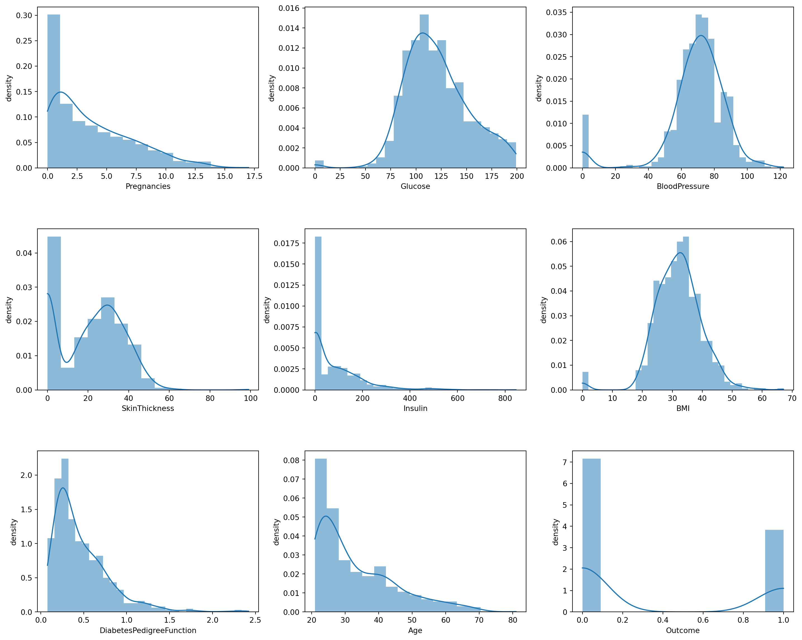
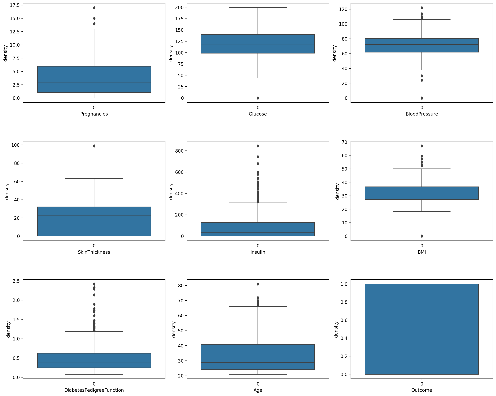
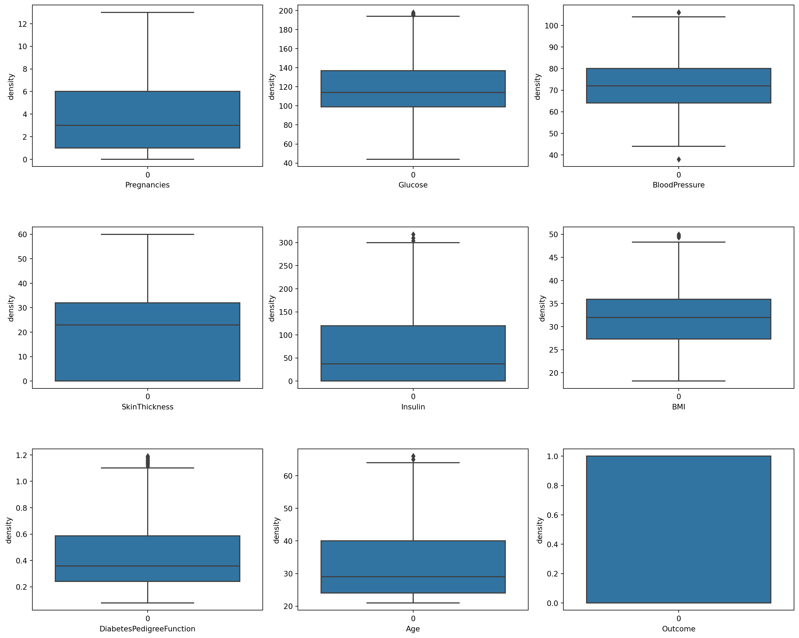
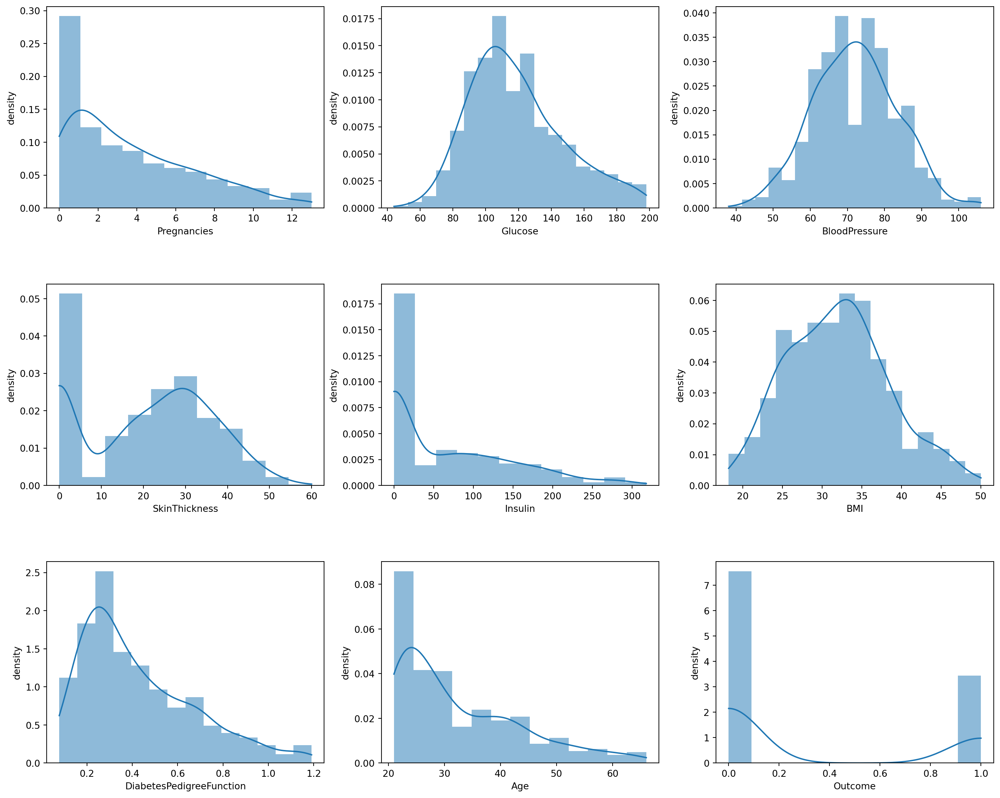
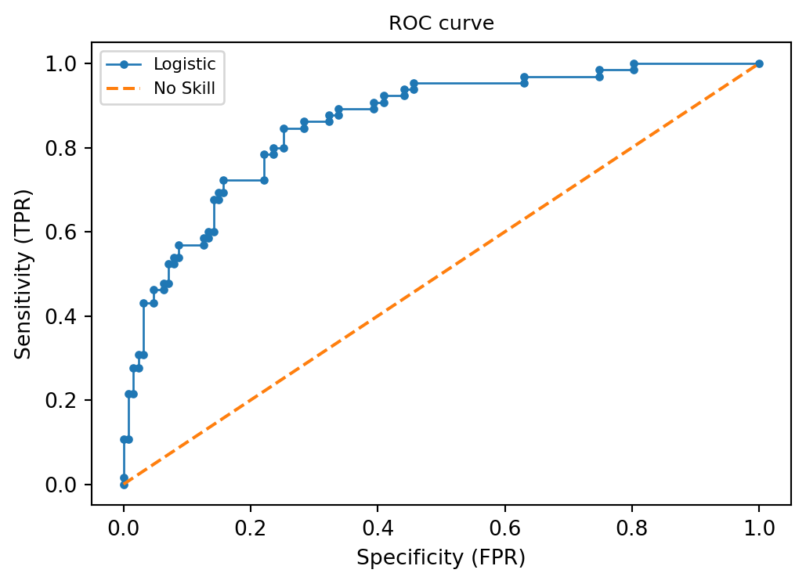
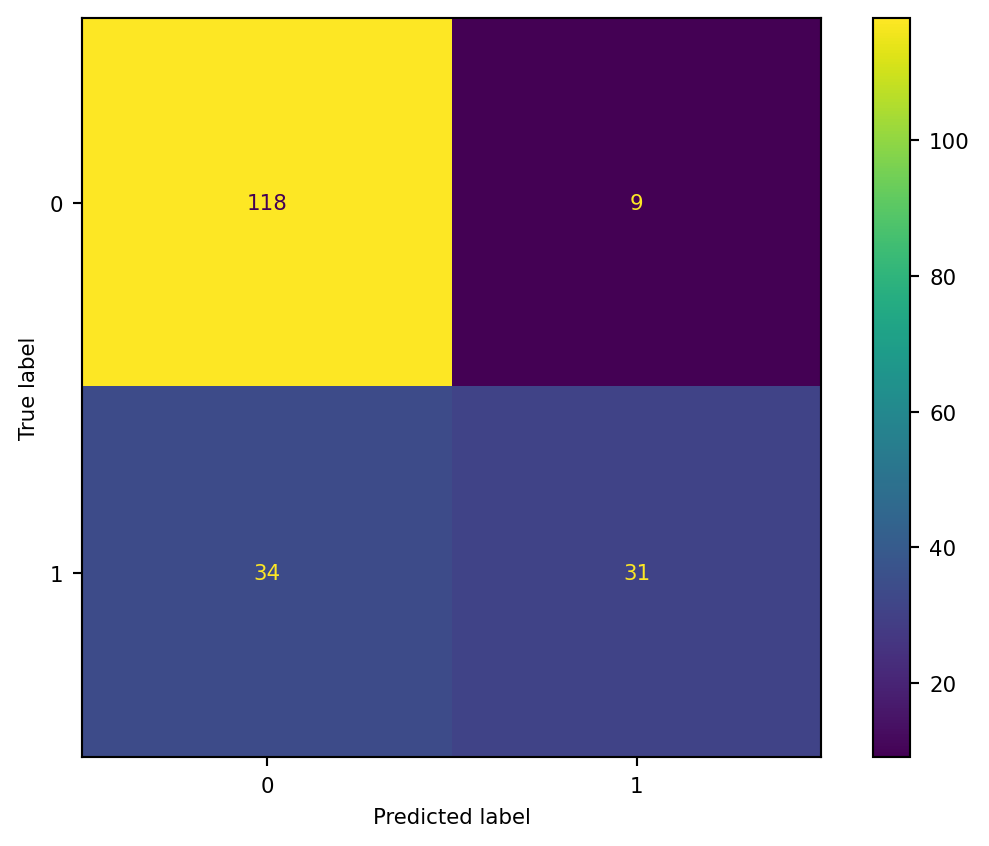
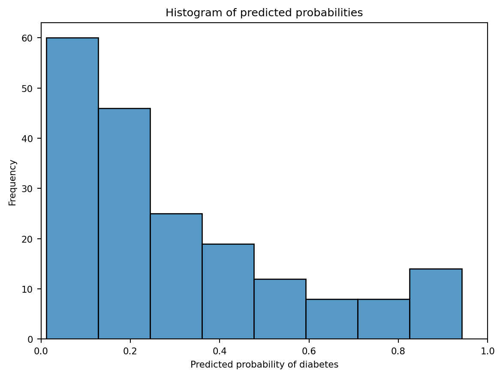

#%% Setup
#Libraries import
import pandas as pd
import matplotlib.pyplot as plt
%matplotlib inline
import seaborn as sns
from numpy import sqrt
from numpy import argmax
from numpy import mean
from numpy import std
from sklearn import metrics
from sklearn.metrics import confusion_matrix, ConfusionMatrixDisplay, accuracy_score, classification_report, mean_squared_error, roc_curve, RocCurveDisplay, recall_score
from sklearn import preprocessing
from sklearn.preprocessing import StandardScaler
from sklearn.model_selection import train_test_split, cross_val_score, KFold
from sklearn.linear_model import LogisticRegression
#Dataset read
pima = pd.read_csv('./source/project2/diabetes.csv')
#The dataset has 768 rows and 9 columns
pima.shape
pima.head()2. Prediction of Diabetes
Dataset
PIMA Indian Diabetes dataset is originally from the National Institute of Diabetes and Digestive and Kidney Diseases.
Objective
The objective is to predict based on diagnostic measurements whether a patient has diabetes.
Constraints
Several constraints were placed on the selection of these instances from a larger database. In particular, all patients here are females at least 21 years old of Pima Indian heritage.
Features
Exploratory Analysis
#This output shows that all dataset features are numeric.
pima.info()<class 'pandas.core.frame.DataFrame'>
RangeIndex: 768 entries, 0 to 767
Data columns (total 9 columns):
# Column Non-Null Count Dtype
--- ------ -------------- -----
0 Pregnancies 768 non-null int64
1 Glucose 768 non-null int64
2 BloodPressure 768 non-null int64
3 SkinThickness 768 non-null int64
4 Insulin 768 non-null int64
5 BMI 768 non-null float64
6 DiabetesPedigreeFunction 768 non-null float64
7 Age 768 non-null int64
8 Outcome 768 non-null int64
dtypes: float64(2), int64(7)
memory usage: 54.1 KB#This function show the main statistics for the features.
pima.describe().T| count | mean | std | min | 25% | 50% | 75% | max | |
|---|---|---|---|---|---|---|---|---|
| Pregnancies | 768.0 | 3.845052 | 3.369578 | 0.000 | 1.00000 | 3.0000 | 6.00000 | 17.00 |
| Glucose | 768.0 | 120.894531 | 31.972618 | 0.000 | 99.00000 | 117.0000 | 140.25000 | 199.00 |
| BloodPressure | 768.0 | 69.105469 | 19.355807 | 0.000 | 62.00000 | 72.0000 | 80.00000 | 122.00 |
| SkinThickness | 768.0 | 20.536458 | 15.952218 | 0.000 | 0.00000 | 23.0000 | 32.00000 | 99.00 |
| Insulin | 768.0 | 79.799479 | 115.244002 | 0.000 | 0.00000 | 30.5000 | 127.25000 | 846.00 |
| BMI | 768.0 | 31.992578 | 7.884160 | 0.000 | 27.30000 | 32.0000 | 36.60000 | 67.10 |
| DiabetesPedigreeFunction | 768.0 | 0.471876 | 0.331329 | 0.078 | 0.24375 | 0.3725 | 0.62625 | 2.42 |
| Age | 768.0 | 33.240885 | 11.760232 | 21.000 | 24.00000 | 29.0000 | 41.00000 | 81.00 |
| Outcome | 768.0 | 0.348958 | 0.476951 | 0.000 | 0.00000 | 0.0000 | 1.00000 | 1.00 |
#This function shows that any of the features has null values
pima.isna().sum()Pregnancies 0
Glucose 0
BloodPressure 0
SkinThickness 0
Insulin 0
BMI 0
DiabetesPedigreeFunction 0
Age 0
Outcome 0
dtype: int64Correlations
Each square shows the correlation between the variables on each axis. Correlation ranges from -1 to +1.
- Values closer to 0: There is no linear trend between the two variables.
- Values closer to 1: The correlation is positive; that is as one increases so does the other and the closer to 1 the stronger this relationship is.
- Values closer to -1: One variable will decrease as the other increases
Correlation matrix:
There is a strong positve correlation between Pregnancies and Age, Glucose and Outcome. There is a strong negative correlation between Skinthickness and Age, Pregnancies and SkinThickness, Pregnance and Insulin
#Correlation of features with the Outcome
corr_report = pima.corr()['Outcome']
corr_report.sort_values(ascending=False)Outcome 1.000000
Glucose 0.466581
BMI 0.292695
Age 0.238356
Pregnancies 0.221898
DiabetesPedigreeFunction 0.173844
Insulin 0.130548
SkinThickness 0.074752
BloodPressure 0.065068
Name: Outcome, dtype: float64outliers = pima[pima['Glucose'] > 150]
outliers| Pregnancies | Glucose | BloodPressure | SkinThickness | Insulin | BMI | DiabetesPedigreeFunction | Age | Outcome | |
|---|---|---|---|---|---|---|---|---|---|
| 2 | 8 | 183 | 64 | 0 | 0 | 23.3 | 0.672 | 32 | 1 |
| 8 | 2 | 197 | 70 | 45 | 543 | 30.5 | 0.158 | 53 | 1 |
| 11 | 10 | 168 | 74 | 0 | 0 | 38.0 | 0.537 | 34 | 1 |
| 13 | 1 | 189 | 60 | 23 | 846 | 30.1 | 0.398 | 59 | 1 |
| 14 | 5 | 166 | 72 | 19 | 175 | 25.8 | 0.587 | 51 | 1 |
| ... | ... | ... | ... | ... | ... | ... | ... | ... | ... |
| 749 | 6 | 162 | 62 | 0 | 0 | 24.3 | 0.178 | 50 | 1 |
| 753 | 0 | 181 | 88 | 44 | 510 | 43.3 | 0.222 | 26 | 1 |
| 754 | 8 | 154 | 78 | 32 | 0 | 32.4 | 0.443 | 45 | 1 |
| 759 | 6 | 190 | 92 | 0 | 0 | 35.5 | 0.278 | 66 | 1 |
| 761 | 9 | 170 | 74 | 31 | 0 | 44.0 | 0.403 | 43 | 1 |
140 rows × 9 columns
outliers['Outcome'].value_counts()Outcome
1 105
0 35
Name: count, dtype: int64# Histogram to analyze the distribution of data
fig, ax = plt.subplots(ncols=3, nrows=3, figsize=(15,12))
index = 0
ax = ax.flatten()
for col, value in pima.items():
col_dist = sns.histplot(value, ax=ax[index], kde=True, stat="density", linewidth=0)
col_dist.set_xlabel(col,fontsize=10)
col_dist.set_ylabel('density',fontsize=10)
index += 1
plt.tight_layout(pad=0.8, w_pad=0.5, h_pad=5.0)
# Boxplot to analyze the distribution of data
fig, ax = plt.subplots(ncols=3, nrows=3, figsize=(15,12))
index = 0
ax = ax.flatten()
for col, value in pima.items():
col_dist = sns.boxplot(value, ax=ax[index])
col_dist.set_xlabel(col,fontsize=10)
col_dist.set_ylabel('density',fontsize=10)
index += 1
plt.tight_layout(pad=0.5, w_pad=0.7, h_pad=5.0)
Outliers
There are some outliers analyzed through the distribution of data in the histograms and boxplots.
They following code has removed the outliers before to proceed with the ML model.
IQR - Interquartile Range
The lower quartile corresponds with the 25th percentile and the upper quartile corresponds with the 75th percentile, so IQR = Q3 − Q1.
The IQR is an example of a trimmed estimator, defined as the 25% trimmed range, which enhances the accuracy of dataset statistics by dropping lower contribution, outlying points.
Q1 = pima.quantile(0.25)
Q3 = pima.quantile(0.75)IQR = Q3 - Q1
IQRPregnancies 5.0000
Glucose 41.2500
BloodPressure 18.0000
SkinThickness 32.0000
Insulin 127.2500
BMI 9.3000
DiabetesPedigreeFunction 0.3825
Age 17.0000
Outcome 1.0000
dtype: float64pima.shape(768, 9)The interquartile range is often used to find outliers in data. Outliers here are defined as observations that fall below Q1 − 1.5 IQR or above Q3 + 1.5 IQR. In a boxplot, the highest and lowest occurring value within this limit are indicated by whiskers of the box (frequently with an additional bar at the end of the whisker) and any outliers as individual points.
# Outlier removal
pima = pima[~((pima < (Q1 - 1.5 * IQR)) | (pima > (Q3 + 1.5 * IQR))).any(axis = 1)]
pima.shape(639, 9)count = pima["Outcome"].value_counts()
countOutcome
0 439
1 200
Name: count, dtype: int64# Data distribution
fig, ax = plt.subplots(ncols=3, nrows=3, figsize=(15,12))
index = 0
ax = ax.flatten()
for col, value in pima.items():
col_dist = sns.boxplot(value, ax=ax[index])
col_dist.set_xlabel(col,fontsize=10)
col_dist.set_ylabel('density',fontsize=10)
index += 1
plt.tight_layout(pad=0.5, w_pad=0.7, h_pad=5.0)
# Histogram to analyze the distribution of data
fig, ax = plt.subplots(ncols=3, nrows=3, figsize=(15,12))
index = 0
ax = ax.flatten()
for col, value in pima.items():
col_dist = sns.histplot(value, ax=ax[index], kde=True, stat="density", linewidth=0)
col_dist.set_xlabel(col,fontsize=10)
col_dist.set_ylabel('density',fontsize=10)
index += 1
plt.tight_layout(pad=0.8, w_pad=0.5, h_pad=5.0)
Logistic Regression ML Model
# Define x and y
feature_cols =['Pregnancies', 'Glucose', 'BloodPressure', 'SkinThickness', 'Insulin', 'BMI', 'DiabetesPedigreeFunction', 'Age']
x=pima[feature_cols]
y=pima.Outcome#split x and y into training (70%) and testing (30%) sets
x_train, x_test, y_train, y_test = train_test_split(x, y, test_size = 0.3, random_state=0)Standardize features
Standardize features by removing the mean and scaling to unit variance.
The standard score of a sample x is calculated as: z = (x - u) / s, where u is the mean of the training samples or zero if with_mean=False, and s is the standard deviation of the training samples or one if with_std=False.
scale = StandardScaler()
x_train = scale.fit_transform(x_train)
x_test = scale.fit_transform(x_test)#Logistic regression model fit on the training set
logreg = LogisticRegression(solver='lbfgs', max_iter=3000)
logreg.fit(x_train, y_train)LogisticRegression(max_iter=3000)In a Jupyter environment, please rerun this cell to show the HTML representation or trust the notebook.
On GitHub, the HTML representation is unable to render, please try loading this page with nbviewer.org.
LogisticRegression(max_iter=3000)
#Using the trained model to predict the outcome for samples in x_test.
y_pred = logreg.predict(x_test)#Return the probability estimates.
y_score = logreg.predict_proba(x_test)[:, 1]ML Model Assessment
- Precision: Percentage of correct positive predictions relative to total positive predictions.
- Recall: Percentage of correct positive predictions relative to total actual positives.
- F1 Score: A weighted harmonic mean of precision and recall. The closer to 1, the better the model. F1 Score: 2 * (Precision * Recall) / (Precision + Recall)
#Comparing actual result and predicted result
print(classification_report(y_test, y_pred)) precision recall f1-score support
0 0.78 0.93 0.85 127
1 0.78 0.48 0.59 65
accuracy 0.78 192
macro avg 0.78 0.70 0.72 192
weighted avg 0.78 0.78 0.76 192
- Precision: Out of all the patients that the model predicted would get diabetes, 78% actually did.
- Recall: Out of all the patients that actually did get diabetes, the model predicted this outcome correctly for 48% of those patients.
- F1 Score: 0.59 - Since this value is close to 1, it tells us that the model does a good job of predicting whether or not patients will get diabetes. 2 * (Precision * Recall) / (Precision + Recall) ***** 2 * (.78 * .48) / (.78 + .48)
- Support: These values is regarding how many patients belonged to each class in the test dataset. Among the patientis in the test dataset, 127 did not get diabetes and 65 did get diabetes.
#The lower the RMS value, the better. O means the model is perfect.
rms = mean_squared_error(y_test, y_pred, squared=False)
rms0.4732423621500228ROC Curve
The ROC curve shows the trade-off between sensitivity (or True Positve Rate) and specificity (1 – False Positive Rate).
Classifiers that give curves closer to the top-left corner indicate a better performance
ROC/AUC does not require to set a classification threshold and it’s still useful when there is high class imbalance
ROC curve can help you to choose a threshold that balances sensitivity and specificity in a way that makes sense for your particular context
You can’t actually see the thresholds used to generate the curve on the ROC curve itself
fpr, tpr, thresh = roc_curve(y_test, y_score, pos_label=logreg.classes_[1])#AUC is the percentage of the ROC plot that is underneath the curve:
# IMPORTANT: first argument is true values, second argument is predicted probabilities
print(metrics.roc_auc_score(y_test, y_pred))0.7030284675953968plt.figure(figsize=(6,4))
plt.plot(fpr, tpr, linewidth=1, marker='.', label='Logistic')
plt.plot([0,1], [0,1], linestyle='--', label='No Skill')
plt.rcParams['font.size'] = 8
plt.title('ROC curve')
plt.xlabel('Specificity (FPR)')
plt.ylabel('Sensitivity (TPR)')
plt.legend()
plt.show()
Accuracy
Percentage of correct predictions
print('Accuracy of Logistic regression model is {}'.format(accuracy_score(y_test,y_pred)))Accuracy of Logistic regression model is 0.7760416666666666Null accuracy
Null accuracy refers to the accuracy that could be achieved by always predicting the most frequent class in the dataset.
In the test set, 66% (127) of patients did not have diabetes, while 34% did. In this case, the null accuracy would be 66%, because if we always predicted “not diabetes,” we would be correct 66% of the time.
y_test.value_counts().head(1) / len(y_test)Outcome
0 0.661458
Name: count, dtype: float64As the null accuracy is less than model accuracy, it indicates a good result.
Comparing the true and predicted response values
#print the 25 first true and predict responses
print ('True:'), y_test.values[0:25]True:(None,
array([0, 0, 0, 0, 0, 1, 0, 1, 0, 0, 0, 0, 1, 1, 0, 1, 1, 0, 1, 0, 0, 1,
0, 0, 0]))print ('Pred:'), y_pred[0:25]Pred:(None,
array([0, 0, 0, 0, 0, 1, 0, 0, 0, 0, 0, 0, 0, 0, 0, 0, 1, 0, 0, 0, 0, 0,
0, 0, 1]))Confusion Matrix
Confusion matrix allows to calculate a variety of metrics. It’s a useful for multi-class problems (more than two response classes)
- Every observation in the testing set is represented in exactly one box
- It’s 2x2 matrix because there are 2 responses classes
- The format shown here is not universal
Basic Terminology
- TP: correctly predict that they have diabetes
- TN: correctly predict that they do not have diabetes
- FP: incorrectly predict that they do have diabetes
- FN: incorrectly predict that they do not have diabetes
#IMPORTANT: First argument is true values, second argument is predict values
metrics.confusion_matrix(y_test, y_pred)array([[118, 9],
[ 34, 31]])#Graphic visualization
cm = confusion_matrix(y_test, y_pred, labels=logreg.classes_)
disp = ConfusionMatrixDisplay(confusion_matrix=cm, display_labels=logreg.classes_)
disp.plot()
plt.show()
- TN: 118 patients without diabetes were correctly predicted as no diabetics
- FP: 9 patients without diabetes were incorrectly predicted as diabetics
- FN: 34 patients with diabetes were incorrectly predicted as no diabetics
- TP: 31 patients with diabetes were correctly predicted as diabetics
#save confusion matrix and slice into four pieces
confusion = metrics.confusion_matrix(y_test, y_pred)
TN = confusion[0,0]
FP = confusion[0,1]
FN = confusion[1,0]
TP = confusion[1,1]
confusionarray([[118, 9],
[ 34, 31]])Metrics computed from a confusion matrix
#How often the classifier is correct?
print('Accuracy: {}'.format((TP + TN) / (TP + TN + FP + FN)))
#print('Accuracy: {}'.format(metrics.accuracy_score(y_test, y_pred_class)))Accuracy: 0.7760416666666666k-Fold Cross-Validation
The k-fold cross-validation procedure divides a limited dataset into k non-overlapping folds. Each of the k folds is given an opportunity to be used as a held back test set, whilst all other folds collectively are used as a training dataset. A total of k models are fit and evaluated on the k hold-out test sets and the mean performance is reported.
#This will give the overall accuracy of your model .
kf = KFold(n_splits=10, random_state=1, shuffle=True)
cv_result = cross_val_score(logreg, x, y, cv=kf, scoring='accuracy', n_jobs=-1)
print('Accuracy: %.3f (%.3f)' % (mean(cv_result), std(cv_result)))Accuracy: 0.784 (0.033)#How often the classifier is incorrect?
print('Error: {}'.format((FP + FN)/(TP + TN + FP + FN)))
#print('Error: {}'.format(1-metrics.accuracy_score(y_test, y_pred_class)))Error: 0.22395833333333334#When the actual value is positive, how often is the prediction correct?
print('Sensitivity (TPR): {}'.format(TP / (TP + FN)))
#metrics.recall_score(y_test, y_pred_class)Sensitivity (TPR): 0.47692307692307695#When the actual value is negative, how often is the prediction correct?
print('Specificity (FPR): {}'.format(TN / (TN + FP)))
#recall_score(y_test, y_pred_class, pos_label=0)Specificity (FPR): 0.9291338582677166#When a positive value is predicted, how often is the prediction correct?
print('Precision: {}'.format(TP / (TP + FP)))
#metrics.precision_score(y_test, y_pred_class)Precision: 0.775Result
The choice of metrics depends on the business objective.
For this project, sensibility (False Negative) is the metric most important, since predicting diabetics as no diabetics is the worst expected error. This may imply no further investigations and consequently no treatment of the disease.
So the better result is to have a Sensitivity (The correct prediction for positive values) result higher than a Specificity (The correct prediction for negative values) result.
The error in predicting a healthy patient as a diabetic patient is more acceptable than the opposite.
Adjusting the classification threshold
#print the first 10 predicted responses
logreg.predict(x_test)[0:10]array([0, 0, 0, 0, 0, 1, 0, 0, 0, 0])#print the first 10 predicted probabilities of class membership
logreg.predict_proba(x_test)[0:10, :]array([[0.83358342, 0.16641658],
[0.80138151, 0.19861849],
[0.95231282, 0.04768718],
[0.87348851, 0.12651149],
[0.67158939, 0.32841061],
[0.38292382, 0.61707618],
[0.93226643, 0.06773357],
[0.5219636 , 0.4780364 ],
[0.92950252, 0.07049748],
[0.69118097, 0.30881903]])#print the first 10 predicted probabilities for class 1
logreg.predict_proba(x_test)[0:10, 1]array([0.16641658, 0.19861849, 0.04768718, 0.12651149, 0.32841061,
0.61707618, 0.06773357, 0.4780364 , 0.07049748, 0.30881903])fig = sns.histplot(data=y_score, bins=8)
plt.xlabel("Predicted probability of diabetes")
plt.ylabel("Frequency")
plt.title("Histogram of predicted probabilities")
plt.xlim(0,1)
plt.rcParams['font.size']=10
plt.show(fig)
Finding the best threshold for predicting diabetes and to increase the sensitivity of the classifier
Threshold of 0.5 is used by default (for binary problems) to convert predicted possibilities into class predictions Threshold can be adjusted to increase sensitivity or specificity Sensitivity and specificity have an inverse relationship
# calculate roc curves
fpr, tpr, thresholds = roc_curve(y_test, y_score)# calculate the g-mean for each threshold
gmeans = sqrt(tpr * (1-fpr))
# locate the index of the largest g-mean
ix = argmax(gmeans)
print('Best Threshold=%f, G-Mean=%.3f' % (thresholds[ix], gmeans[ix]))Best Threshold=0.242365, G-Mean=0.796# get the best threshold
J = tpr - fpr
ix = argmax(J)
best_thresh = thresholds[ix]
print('Best Threshold=%f' % (best_thresh))Best Threshold=0.242365# define a function that accepts a threshold and prints sensitivity and specificity
def evaluate_threshold(threshold):
print('Sensitivity:', tpr[thresholds > threshold][-1])
print('Specificity:', 1 - fpr[thresholds > threshold][-1])evaluate_threshold(0.5)Sensitivity: 0.47692307692307695
Specificity: 0.9291338582677166evaluate_threshold(0.3)Sensitivity: 0.7230769230769231
Specificity: 0.7795275590551181evaluate_threshold(0.242365)Sensitivity: 0.8461538461538461
Specificity: 0.7480314960629921#predict diabetes if the predicted probabilities is greater than 0.242365
y_pred_2 = preprocessing.binarize([y_score], threshold=0.242365)[0]#print the first 10 predicted probabilites
y_pred[0:10]array([0, 0, 0, 0, 0, 1, 0, 0, 0, 0])#print the first 10 predicted classes with the lower threshold
y_pred_2[0:10]array([0., 0., 0., 0., 1., 1., 0., 1., 0., 1.])#previous confusion matrix (default threshold of 0.5)
confusionarray([[118, 9],
[ 34, 31]])#now confusion matrix (threshold of 0.3)
confusion_2 = metrics.confusion_matrix(y_test, y_pred_2)
TN = confusion_2[0,0]
FP = confusion_2[0,1]
FN = confusion_2[1,0]
TP = confusion_2[1,1]confusion_2array([[95, 32],
[10, 55]])#sensitivity has increased (used to be 0.7384615384615385)
print('Sensitivity (TPR): {}'.format(TP / (TP + FN)))Sensitivity (TPR): 0.8461538461538461#sensitivity has increased (used to be 0.7795275590551181)
print('Specificity (FPR): {}'.format(TN / (TN + FP))) Specificity (FPR): 0.7480314960629921#AUC is the percentage of the ROC plot that is underneath the curve:
print(metrics.roc_auc_score(y_test, y_pred_2))0.7970926711084192Conclusion
With a threshold of 0.242365, the sensitivity has increased from 0.48 to 0.85, and the specificity has decreased from 0.93 to 0.75. Despite the decrease in specificity, for this project, the most important metric is sensitivity, once we want to correctly predict the patients with diabetes, the correct prediction for positive values.
The AUC has also increased after threshold adjustment, from 0.70 to 0.79.